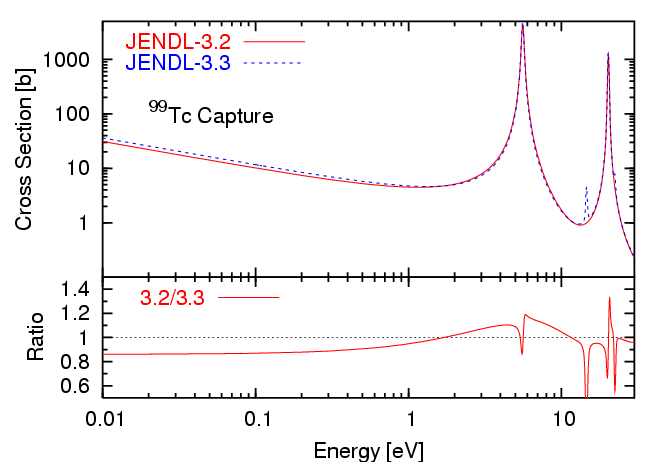

set term postscript eps enhanced color
set output "twofig.eps"
set xrange [ 0.01 : 30 ]
set size 0.6,0.6
set log x
set xtics 10
set mxtics 10
set lmargin 8
set rmargin 2
set multiplot
set key left top
set size 0.6,0.24
set origin 0.0,0.0
set bmargin 3
set tmargin 0
set yrange [ 0.5 : 1.5 ]
set ytic 0.6,0.2,1.4
set mytics 2
set ylabel "Ratio" 1
set xlabel "Energy [eV]"
plot 1 noti w l 0,"twofig.dat" using 1:($2/$3) t "3.2/3.3" w l 1
set size 0.6,0.36
set origin 0.0,0.24
set bmargin 0
set tmargin 1
set log xy
set yrange [ 0.1 : 5000 ]
set ytic 1,10
set mytics 10
set format x ""
set xlabel ""
set ylabel "Cross Section [b]" 1
set label "^{99}Tc Capture" at 0.02, 100
plot "twofig.dat" u 1:2 t "JENDL-3.2" w l 1,"" u 1:3 t "JENDL-3.3" w l 3
set nomultiplot
